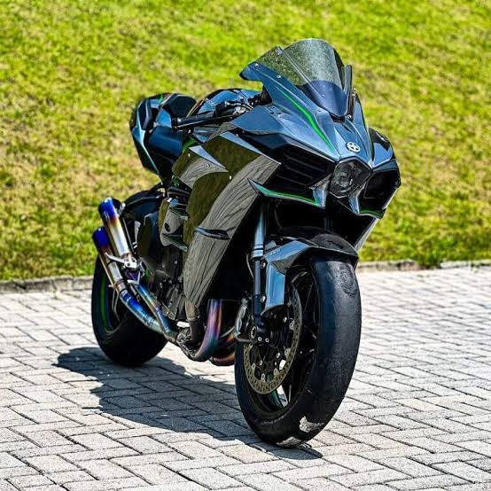

<html lang="en">

<head>
    <meta charset="UTF-8">
    <meta name="viewport" content="width=device-width, initial-scale=1.0">
    <title>Document</title>
</head>

<body>

</body>

</html>
ead>

<meta charset="UTF-8" />
<meta name="viewport" content="width=device-width, initial-scale=1.0" />
<title>Flashcards de mitos e verdades</title>
<link rel="stylesheet" href="style.css">
</head>

<body>

    <header class="cabecalho">
        <h1>Confere aí</h1>
        <nav>
            <a href="#">inicio</a>
        </nav>

    </header>

    <main>
        <h2>Descubra a verdade passando o mouse</h2>
        <article class="cartao">
            <div class="cartao-interno">
                <div class="cartao-frente">
                    
                    <p>A Yamaha YZF-R6 é uma motocicleta esportiva de 600 cc lançada em 1999, conhecida pelo seu alto
                        desempenho, agilidade e forte presença em competições de supersport. Equipada com um motor de 4
                        cilindros em linha, refrigeração líquida e câmbio de 6 marchas, ela entrega cerca de 118 a 120
                        cv.</p>
                </div>
            </div>

            <div class="cartao-interno">
                <div class="cartao-frente">
                    
                    <p>A Yamaha YZF-R6 é uma motocicleta esportiva de 600 cc lançada em 1999, conhecida pelo seu alto
                        desempenho, agilidade e forte presença em competições de supersport. Equipada com um motor de 4
                        cilindros em linha, refrigeração líquida e câmbio de 6 marchas, ela entrega cerca de 118 a 120
                        cv.</p>
                </div>
            </div>
        </article>


    </main>
    <article></article>

    <pooter>

    </pooter>

</body>

</html>